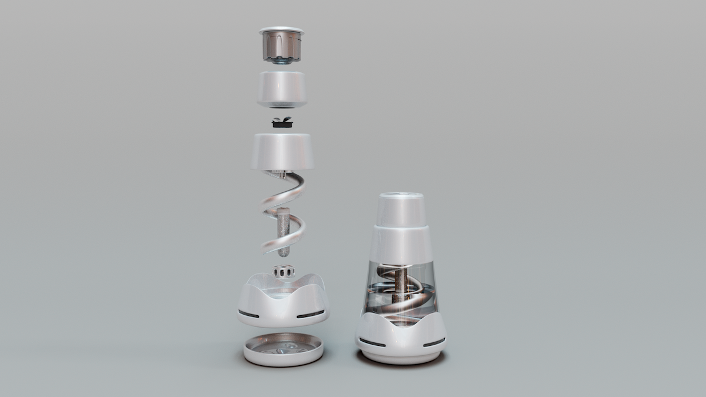
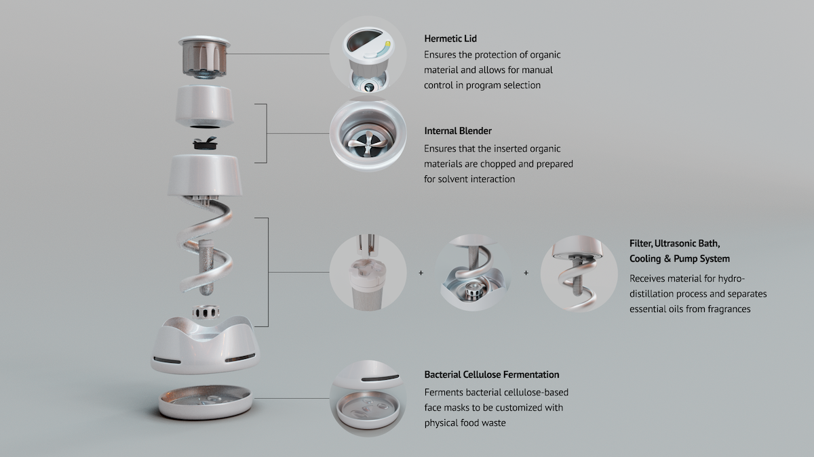
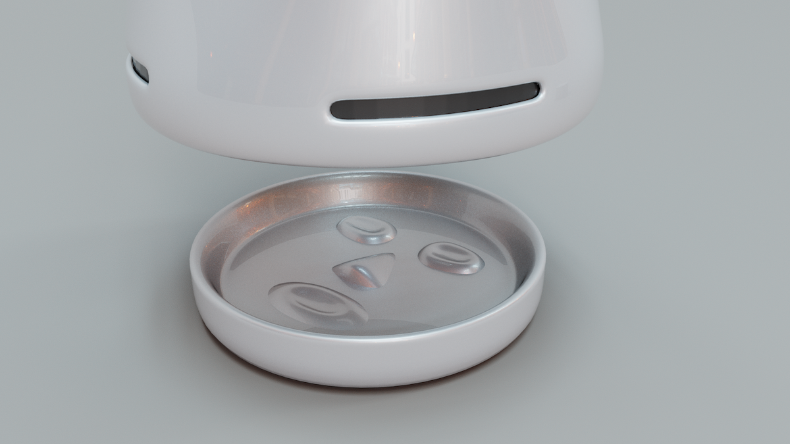
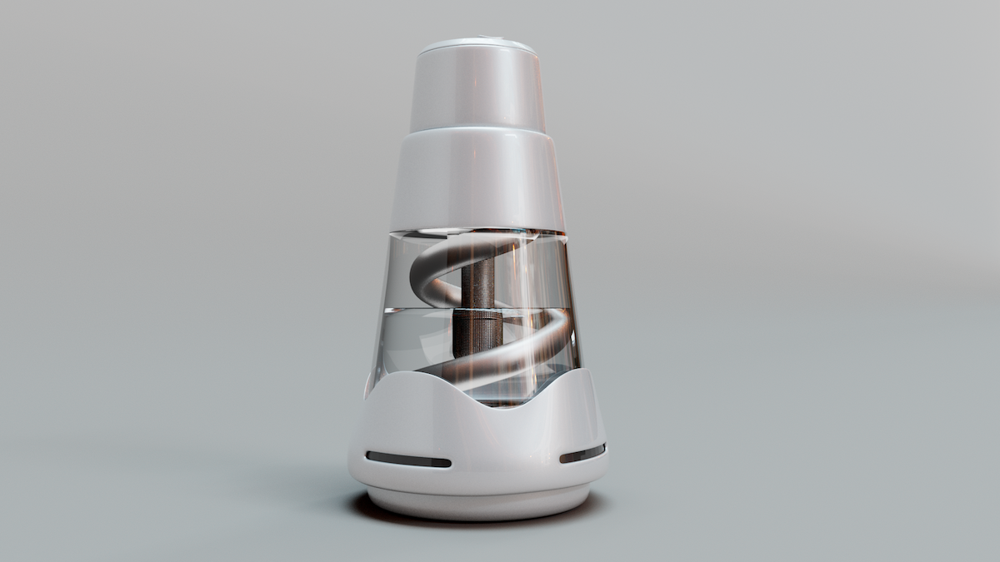

Globally, 1/3 of food is wasted every year - in Japan, this comes down to 6 million tonnes, where 96% of that ends up in landfills. How might we make upcycling food waste more accessible to individuals? How might we integrate food waste products into our daily lives?
01. RESEARCH
Our team conducted research through user interviews, field visits, and experimentation. My visit to Itabashi Incineration Plant, one of Tokyo’s 23 incineration plants, showed that all waste, no matter how it is sorted by individuals, ends up in incineration or landfills. Our main insight found that food needs to be separated from other municipal waste, preventing it from entering the waste stream altogether.


(Field Visit to Itabashi Incineration Plant)
02. DESIGN
Vleur was first designed with Japanese consumers in mind. With limited countertop and storage space within Japanese kitchens, Vleur’s compact design is a 3-in-1 as it combines ultrasonic waves, maceration, and bacterial cellulose fermentation to preserve the properties of organic compounds. Overall, it allows individuals to customize their self-care routines with eco-friendly alternatives to essential oils and skincare products.
  (3D Model by Hao Liu)
In this project, we designed a household device to empower Japanese consumers to customize their self-care routines to create personal care products, such as essential oils and skincare products from their household food waste. I conducted material experimentation (see “Skinside Out” project here https://sabrinatian.com/skinsideout.html), conducted research on local waste management systems, and visited Itabashi Incineration Plant. Our project was presented in June 2023 at the 2023 Biodesign Challenge Summit in New York and exhibited at the “Metamorphosis” exhibition at Parsons School of Design.
→ Summer 2023 (3 months)
→ Biodesign Challenge x Keio University, Samcara
→ Instructor: Matthew Waldman
→ Collaborators: Magdalena Garibaldi, Tianyu Jin, Hao Liu, Suguira Masaya, Ami Torii
→ View official media here